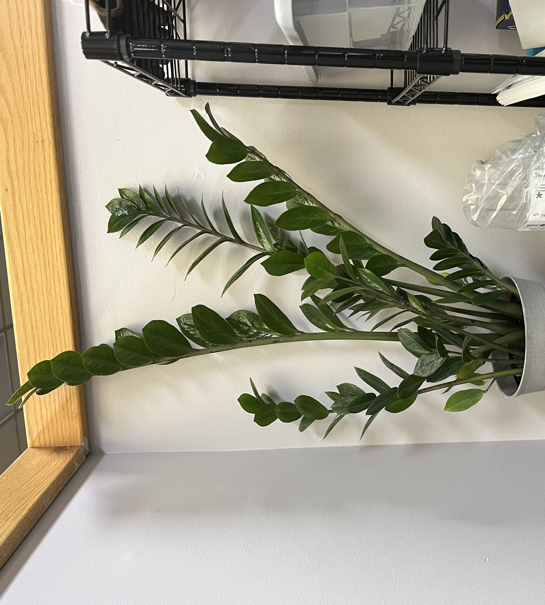

Thinking of the future plans I have with my partner
Reminding myself of my accomplishments so far
- Hobby Spotlight -

One of Zena's hobbies is taking care of houseplants, and here is an image featuring one of her houseplants that she takes care of in her cublicle at work. The plant is a Zizi plant, and they are very easy to take care of, which is why Zena felt comfortable bringing this plant to work to brighten up her workspace.